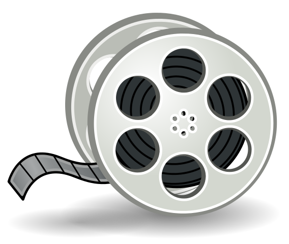
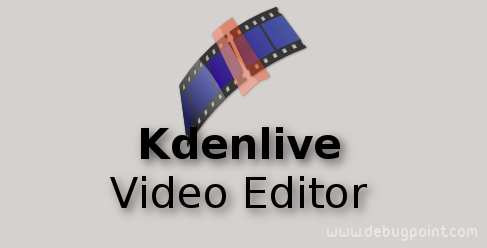

The Web
Categorie
Multimedia
Profiel Content Creator
tooling Video Editing

Video editing is het rangschikken en bewerken van segmenten van filmbeelden van bewegende videoproductie, speciale effecten en geluidsopnames in het postproductieproces van videobeelden. Video editing wordt gebruikt om alle video informatie te structureren en te presenteren, inclusief films en televisieprogramma's, video advertenties en video essays. Video editing is de afgelopen jaren enorm gedemocratiseerd door bewerkingssoftware die beschikbaar is voor personal computers en werkstations, en omvat snijsegmenten (bijsnijden), resequencing van clips en het toevoegen van overgangen en speciale effecten.
→ zie: Wikipedia Video Editing
Film editing is een voorloper van video editing en op verschillende manieren simuleert video editing de film editing, door het gebruik van lineaire video bewerking software en niet lineaire bewerking (NLE). Met behulp van video editing kan een regisseur niet fictieve en fictieve gebeurtenissen communiceren. Het doel van bewerken is om deze gebeurtenissen te manipuleren om de communicatie dichter bij het (oorspronkelijke) doel te brengen. Het is een visuele kunst.
Video Editing kenmerken
Linear video editing met behulp van videoband en wordt op een zeer lineaire manier bewerkt. Verschillende videoclips van verschillende banden worden opgenomen op een enkele band in de volgorde waarin ze verschijnen
Niet lineair bewerkingssysteem (NLE), dit wordt bewerkt op computers met gespecialiseerde software. Deze zijn niet destructief naar de video die wordt bewerkt en gebruik programma's zoals Adobe Premiere Pro, Final Cut Pro en Avid
Offline bewerken is het proces waarbij onbewerkte beelden worden gekopieerd van een originele bron, zonder het origineel te beïnvloeden. Nadat de bewerking volledig is bewerkt, worden de oorspronkelijke media opnieuw geassembleerd in de online bewerkingsfase
Online bewerken is het proces waarbij de bewerking weer wordt samengevoegd tot video met volledige resolutie nadat een offline bewerking is uitgevoerd en gebeurt in de laatste fase van een videoproductie
Vision mixen, wanneer u werkt in live televisie- en video productie omgevingen. Er wordt een vision mixer gebruikt om live feed van verschillende camera's in realtime te knippen
- Tooling voor Video Editing
-
Alternatieve niét FOSS tooling Adobe Premiere Pro geschikt voor Windows en macOS (betaald), Davinci Resolve geschikt voor Windows, macOS en Linux (betaald), PowerDirector geschikt voor Windows (betaald), Lightworks geschikt voor Windows, macOS Linux (betaald), HitFilm Express geschikt voor Windows en macOS (betaald), Apple Final Cut Pro X geschikt voor macOS (betaald), Avid Media Composer First geschikt voor Windows, macOS (betaald), VideoPad geschikt voor Windows, macOS, Andriod, iOS (betaald), Windows Movie Maker geschikt voor Windows (free), Apple iMovie geschikt voor macOS, iOS (free).
Wél FOSS tooling OpenShot geschikt voor Windows, macOS, Linux (free), KdenLive geschikt voor Windows, macOS, Linux (free), Shotcut geschikt voor Windows, macOS, Linux (free), Olive geschikt voor Windows, macOS, Linux (free).
- KdenLive
-
 Kdenlive (KDE) is free open source niet lineaire video editor op basis van het MLT Framework, KDE en Qt. KDE maakt gebruik van MLT-, Frei0r-effecten, SoX- en LADSPA-bibliotheken.
→ zie: Website KdenLive tbv download - Kenmerken
-
KDE ondersteunt alle formaten die worden ondersteund door FFmpeg of libav zoals QuickTime, AVI, WMV, MPEG en Flash Video, oa, en ondersteunt ook beeldverhoudingen van 4:3 en 16:9 voor zowel PAL, NTSC en verschillende HD normen, inclusief HDV en AVCHD. Video kan ook worden geëxporteerd naar DV-apparaten of worden geschreven naar een dvd met hoofdstukken en een eenvoudig menu.
Heeft multi-track bewerking met een tijdlijn en ondersteunt een onbeperkt aantal video- en audiotracks. Een ingebouwde titeleditor en hulpmiddelen om videoclips, audioclips, tekstclips en afbeeldingsclips te maken, verplaatsen, bijsnijden en verwijderen. mogelijkheid om aangepaste effecten en overgangen toe te voegen.
Een breed scala aan effecten en overgangen. Audio-effecten zijn onder meer normalisatie, fase- en onhoogte-verschuiving, beperking, volumeaanpassing, galm- en egalisatiefilters evenals andere. Visuele effecten omvatten opties voor maskeren, blauw scherm, vervormingen, rotaties, kleurgereedschappen, vervaging, verduistering en andere.
Configureerbare sneltoetsen en interface-indelingen. Renderen gebeurt met behulp van een afzonderlijk niet-blokkeerproces, zodat het kan worden gestopt, onderbroken en opnieuw gestart.
Biedt ook een script met de naam Kdenlive Builder Wizard (KBW) dat de nieuwste ontwikkelaarsversie compileert van de software en de belangrijkste afhankelijkheden van de bron, zodat gebruikers nieuwe functies kunnen proberen en meld problemen op de bug-track.